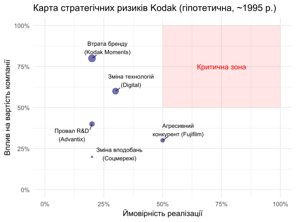
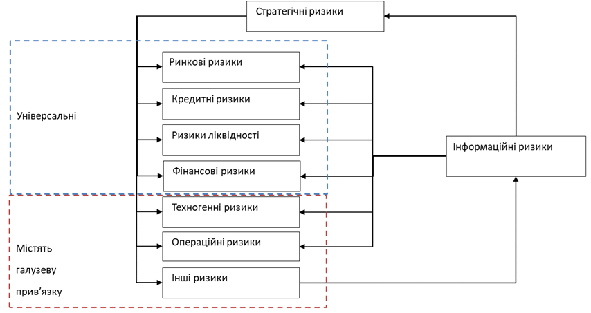
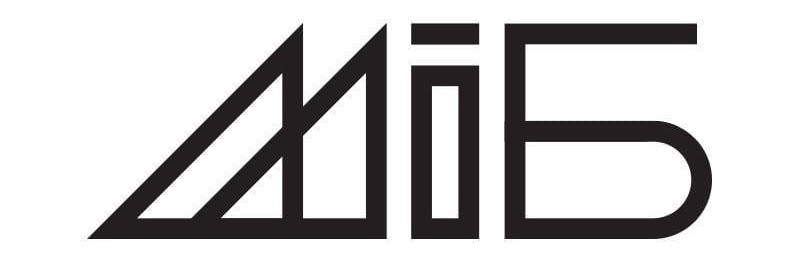

| Вірна гіпотеза | Помилкова гіпотеза | |
|---|---|---|
| Приймається | Правильне рішення | Помилка 2-го роду |
| Відхиляється | Помилка 1-го роду | Правильне рішення |
Стратегічні ризики та управління ними
Ризик-менеджмент
Ігор Мірошниченко
Міжнародний інститут бізнесу
1. НЕВИЗНАЧЕНІСТЬ
ТРИ ПОМИЛКИ ЩОДО РИЗИКУ
У 1996 році Kodak мала 140 000 співробітників і капіталізацію $28 млрд. Вони фактично винайшли цифрову фотокамеру. Чому через 16 років компанія збанкрутувала? Тому що вони зробили три ключові помилки щодо ризику…
- ❌ Помилка 1: Захист прибуткового бізнесу (плівка) важливіший за прийняття нового ризику (цифра).
- 🚫 Помилка 2. Спроба “виключити” ринок цифрової фотографії, ігноруючи його.
- ⚠️ Помилка 3. Віра в те, що “безпечний шлях” (продовження бізнесу з плівкою) є дійсно безпечним.
ФАКТОРИ ФОРМУВАННЯ РИЗИКУ
- 🔮 Фактор 1. Невизначеність події: декілька альтернатив майбутнього.
- 📉 Фактор 2. Втрати: небажаний результат (падіння акцій, попиту).
- 👤 Фактор 3. Небайдужість: суб’єктивність впливу.
РИЗИКИ ЗА ПОХОДЖЕННЯМ
- 🔥 Чистий ризик: можливість несподіваної чи незапланованої втрати (зміна податкового законодавства, сходження лавини, втрата майна внаслідок форс-мажорних обставин)
- 📈 Спекулятивний ризик: можливість не тільки зазнати втрат, а й придбати деякі вигоди з різних варіантів розвитку подій (операції купівлі-продажу акцій, валюти, різних фінансових інструментарії для подальшого перепродажу)
РІЗНИЦЯ МІЖ РИЗИКОМ ТА НЕВИЗНАЧЕНІСТЮ
- Невизначеність - це іманентний стан природи, при якому достовірно невідомо, яка саме подія з усіх можливих може трапитись.
- Ключові фактори:
- Неможливість передбачити майбутнє на 100%
- Відсутність інформації щодо параметрів системи
- Непередбачуваність учасників
- Ризик - це ймовірнісна категорія. Це наслідок невизначеності, який намагаємось оцінити.
РІЗНИЦЯ МІЖ РИЗИКОМ ТА НЕВИЗНАЧЕНІСТЮ
- Залишкова невизначеність:
- Інтервальна невизначеність
- Дискретна невизначеність
- Ймовірнісна невизначеність
ПОМИЛКИ
4 ГРУПИ РИЗИКІВ
| Рівень | Назва ризику | Приклади |
|---|---|---|
| 0 | Глобальні ризики | Унікальні події, які призводять до великих втрат |
| 1 | Стратегічні ризики: ризики, на які компанія йде свідомо, реалізуючи свою стратегію | Попит на продукцію, Поява нових конкурнтів, Технологічні зміни |
| 2 | Традиційні ризики: які характерні в тією чи іншою мірою для всіх підприємств (комерційні, кредитні, операційні, ризики ліквідності) | Ринкові ризики, Кредитні ризики, Ризики ліквідності |
| 3 | Галузеві ризики: які характерні тільки для підприємств конкретної галузі | Металургійна галузь, Банківська справа, Страхові компанії |
2. СТРАТЕГІЧНІ РИЗИКИ
ОСНОВНІ ПОЛОЖЕННЯ
- Стратегія - те, що формується у головах у власника і керівників вищої ланки. Відсутність єдності у стратегічному фокусуванні топ-менеджерів, мабуть, найсерйозніший стратегічний ризик бізнесу
- Стратегічні ризики важно розпізнати та кількісно оцінити.
ТРИ КОНЦЕПТУАЛЬНІ СТРАТЕГІЧНІ РИЗИКИ
- 🧠 Слабкість стратегічного менеджменту компанії:
- Стратегічне мислення
- Стратегічне планування
- Ситуаційні рішення
- 🤝 Недостатня увага до корпоративної культури:
- Цінності компанії
- Сприйняття часту та шляху
- Гармонія інтересів
- Відчуття відповідальності
- 🎯 Неефективна організація стратегічного процесу: невміла організація, недосягнення цілей
СТРАТЕГІЧНІ ГОРИЗОНТИ
- 🔭 Горизонт бачення (5-10+років):
- Цінності компанії на ринку?
- Відносини з клієнтами та партнерами?
- Ключові фактори успіху бізнесу?
- Які знання/здібності/компетенції необхідні для досягнення цілей?
- 🏗️ Горизонт моделей (2-5 років):
- Баланс розвитку бізнесу
- Формалізація процедур бізнес-моделювання
- Постійність грошових потоків для досягнення цілей
- 🗓️ Горизонт завдань (до 1 року):
- Які завдання почати вирішувати зараз, щоб забезпечити другий рівень
Якби керівництво Kodak у 1995 році чесно подивилося на горизонт бачення (5-10 років), що б вони побачили? Появу інтернету, зростання потужності комп’ютерів, бажання людей миттєво ділитися зображеннями. Усі складові їхньої майбутньої кризи були вже помітні.
А які стратегічні горизонти у вашій компанії? Чи заглядаєте ви на 5-10 років уперед?
ЕТАПИ СТРАТЕГІЧНОГО ПРОЦЕСУ
graph TD
subgraph "Підготовка"
A["Виявлення інтересів"] --> B["Оцінка потенціалу"] --> C["Збір даних"];
end
subgraph "Сесія 1: Бачення"
C --> D{Перша сесія};
D --> E["Формування бачення"] --> F["Оцінка розривів"];
F --> G([Меморандум]);
end
subgraph "Сесія 2: Цілі"
G --> H{Друга сесія};
H --> I["Постановка цілей"] --> J["Оцінка альтернатив"];
J --> K([Стратегічні цілі]);
end
subgraph "Рада директорів: Рішення"
K --> L{Рада директорів};
L --> M["Вибір альтернативи"] --> N["Формування КРІ"];
end
СТРАТЕГІЧНИЙ ПРОФІЛЬ
Стратегічний профіль містить шість вимірів:
- Основні типи процесів стратегії;
- Фундаментальні підходи у стратегічному менеджменті;
- Сратегічне позиціонування;
- Напрями пошуку конкурентних переваг;
- Стратегічна орієнтація підприємств;
- Підходи до вибору джерел фінансування бізнесу.
1. ОСНОВНІ ТИПИ ПРОЦЕСІВ СТРАТЕГІЇ
а) Стратегія як планований процес (🗺️): - Свідомий і контрольований процес планування. - Кроки прийняття рішень стандартизовані, процедури формалізовані. - Впровадження після ретельної розробки й погоджень за календарем. - Переваги: передбачуваність, узгодженість. Обмеження: повільність, інерційність.
b) Підприємницький процес (🚀): - Напівсвідомий, візійний, інтуїтивний. - Спирається на досвід і проникливість лідера; особисте бачення. - Висока гнучкість і швидкість рішень. - Переваги: проривні ідеї, швидкість. Ризики: залежність від однієї особи.
c) Навчання через досвід (🔁): - Еволюційний, ітеративний процес формування стратегії. - Курс задають внутрішні та зовнішні імпульси. - Експерименти, зворотний зв’язок, постійні адаптації. - Переваги: адаптивність. Ризики: розмитість фокусу, довший шлях до узгодженості.
2. ФУНДАМЕНТАЛЬНІ ПІДХОДИ У СТРАТЕГІЧНОМУ МЕНЕДЖМЕНТІ
динамічна конкурентна стратегія: постійна зміни стратегій та стратегічних можливостей (не концентруватися на одній стратегії чи процесі).
«стратегія блакитного океану»: створення інноваційної цінності
| Стратегія..червоного.океану. | Стратегія..блакитного.океану. |
|---|---|
| Боротьба у існуючому ринковому просторі | Створення вільного від конкуренції ринкового простору |
| Перемога над конкурентами | Можливість не боятися конкуренції |
| Експлуатування існуючого попиту | Створення нового попиту та оволодіння ним |
3. СТРАТЕГІЧНЕ ПОЗИЦІОНУВАННЯ
💸 Лідерство за витратами
- Суть: мінімальна собівартість при прийнятній якості
- Коли працює: стандартизований продукт, ефект масштабу
- Важелі: операційна ефективність, постачання, автоматизація
⭐ Диференціація
- Суть: унікальна цінність з ціновою премією
- Коли працює: важливі нефінансові атрибути (досвід, дизайн, сервіс)
- Важелі: бренд, R&D
🎯 Фокус (концентрація)
- Суть: вузький сегмент/ніша з глибокою експертизою
- Коли працює: нішеві потреби, недообслуговувані масовими гравцями
- Важелі: кастомізація, спеціалізовані канали/сервіс
4. НАПРЯМИ ПОШУКУ КОНКУРЕНТНИХ ПЕРЕВАГ
🏭 Усередині підприємства
- Коли працює: стабільні/детерміновані ринки (напр., електроенергія)
- Джерела переваг:
- Операційна ефективність, автоматизація
- Масштаб і сила закупівель
- Дані та аналітика процесів
- Культура виконання, швидкість рішень
- Інструменти:
- Лідерство за витратами, стандартизація
- Вертикальна інтеграція
🌐 Поза підприємством
- Коли працює: ринки з вимогою «незвичайної» цінності (B2C/B2B2C)
- Джерела переваг:
- Глибоке розуміння клієнта, сегментація
- Бренд, сервіс, UX, екосистема
- Партнерства/платформи, мережеві ефекти
- R&D та інтелектуальна власність
- Інструменти:
- Диференціація, дизайн‑мислення, сервісні моделі
- Community/ambassadors
- Результат: або нижча собівартість за однакової цінності, або вища цінність за прийнятної ціни.
5. СТРАТЕГІЧНА ОРІЄНТАЦІЯ ПІДПРИЄМСТВ
🧭 Стійке стратегічне бачення (vision‑driven)
- 📅 Горизонт планування 3–7 років
- 🌍 Аналіз макротенденцій, від яких залежить майбутнє
- 🧠 Сценарне мислення й робота з невизначеністю
- 🔮 Інфосистема, орієнтована на прогнозування
- 🏗️ Орієнтація на відданість, розвиток активів, вертикальну інтеграцію
- 🌟 Харизматичне «бачильницьке» лідерство
- 🧱 Централізована, жорстка структура «згори донизу»
- 👥 Культура виконання: готовність реалізовувати рішення
- ⚖️ Перевага завдяки ефекту масштабу
- 📣 Сильні ринкові сигнали через результати компанії
🔁 Орієнтація на можливості (адаптивна)
- 📆 Каденція планування: місяць/квартал/рік
- 🛰️ Фокус на поточні загрози та можливості
- 🧭 Сканування середовища й контроль змін
- ⏱️ Інфосистема, орієнтована на час і швидкість реакції
- 🪶 Гнучкість, адаптивність, швидка відповідь
- 🤝 Тактичне, діяльне лідерство
- 👤 Підприємницька культура
- 🧰 Перевага через розширення видів діяльності/портфеля
- 🎲 Дії компанії часто стають сюрпризом для конкурентів
6. ПІДХОДИ ЩОДО ВИБОРУ ДЖЕРЕЛ ФІНАНСУВАННЯ БІЗНЕСУ
власні: це гроші, внесені в момент створення компанії, плюс реінвестований прибуток
позикові: це гроші, позичені за допомогою різноманітних фінансових інструментів, від простих кредитів до випуску конвертованих облігацій.
ВИЗНАЧЕННЯ СТРАТЕГІЧНОГО ПРОФІЛЮ КОМПАНІЇ
Крок 1. Стратегічна сесія (інструктаж) - Короткий вступ до ризик-менеджменту - Огляд 6 вимірів стратегічного профілю - Узгодження термінів і шкал оцінювання
Крок 2. Анкетування топ-команди - У кожному вимірі учасник розподіляє 100% між альтернативами - Оцінки незалежні; сума в межах блоку = 100% - Приклад (джерела фінансування): 70% консервативна / 30% агресивна - Опційно: «як є» vs «як має бути» (дві анкети)
ВИЗНАЧЕННЯ СТРАТЕГІЧНОГО ПРОФІЛЮ КОМПАНІЇ: Крок 3
Крок 3. Оцінка узгодженості стратегічного фокусу
- 🎯 Мета: виміряти ступінь стратегічного розфокусування команди.
- 🧾 Дані: розподіли 100% по альтернативам у 6 вимірах для кожного учасника.
- 🧮 Метрики: σ (стандартне відхилення) та CV = σ/μ × 100% по кожній альтернативі/виміру.
- 🔎 Інтерпретація: нижчі σ/CV → вища узгодженість; вищі σ/CV → розфокусування і вищий стратегічний ризик.
- ⚖️ Орієнтири: CV < 15% — узгоджено; 15–30% — часткова єдність; >30% — розфокусування.
- ➕ Додатково: оцінити «як є» vs «як має бути» (розрив = ціль − факт).
- 📊 Вихід: heatmap/ранжування вимірів за CV для пріоритизації дій.
Приклад аналізу результатів анкетування

КЛАСИФІКАЦІЯ СТРАТЕГІЧНИХ РИЗИКІВ
Політичний ризик, який пов’язаний із втратами, що виникають у результаті проведення державної політики: зміна політичного курсу та пріоритетних напрямів розвитку країни і, як наслідок, зміна податкового, трудового, господарського законодавства.
Розрізняють чотири групи політичних ризиків:
- ризик втрат унаслідок націоналізації без рівноцінної компенсації;
- ризик трансферту валют (неможливість конвертації однієї валюти в іншу)
- ризик втрат через розрив контракту внаслідок дій влади країни, де знаходиться контрагент;
- ризик втрат унаслідок воєнних дій та цивільних заворушень.
Класи стратегічних ризиків
- 📉 Скорочення прибутковості у галузі
- 💡 Технологічні зміни
- 🏷️ Ерозія та втрата бренду
- 🤺 Поява унікального конкурента
- ⏳ Застій бізнесу
- 💥 Провал нового проекту
- 🛍️ Зміна переваг споживача
На прикладі Kodak
- 💡Технологічні зміни: Їхній власний винахід їх і вбив.
- 🤺Поява унікального конкурента: Спочатку цифрові камери (Sony, Canon), потім смартфони (Apple).
- ⏳Застій бізнесу: Вони занадто довго трималися за надприбуткову модель продажу плівки.
- 🛍️Зміна переваг споживача: Люди захотіли миттєво ділитися фото, а не друкувати їх.
ПРОЦЕДУРА УПРАВЛІННЯ СТРАТЕГІЧНИМИ РИЗИКАМИ
- 🔍 1. Виявлення та оцінка стратегічних ризиків компанії.
- 🗺️ 2. Складання картки стратегічних ризиків.
- 🔢 3. Кількісна оцінка ризиків.
- 💡 4. Виявлення потенційних переваг, що супроводжують управління ризиками.
- 🛡️ 5. Розробка плану мінімізації потенційних негативних факторів.
- ⚖️ 6. Коригування стратегії розподілу капіталу.
ЕТАП 1. ВИЯВЛЕННЯ ТА ОЦІНКА СТРАТЕГІЧНИХ РИЗИКІВ
Серйозність небезпеки. “Яка частка вартості вашої компанії опиниться під загрозою у разі реалізації ризику?”
Ймовірність реалізації. Яка ймовірність події, з якою пов’язаний ризик?
Терміни. Чи можна визначити, коли реалізація ризику буде найімовірнішою?
Зміна ймовірності. Чи можна визначити, як ймовірність реалізації ризику змінюється з часом? Наприклад, практика показує, що небезпека різкого скорочення продажів збільшується до п’ятого року бізнес-циклу, а ризик провалу проекту зменшується у міру реалізації чергового етапу.
КАРТА СТРАТЕГІЧНИХ РИЗИКІВ KODAK (~1995)
ДЕТАЛІЗАЦІЯ РИЗИКІВ (ВХІДНІ ДАНІ ДЛЯ КАРТИ)
| Джерело.ризику | Відсоток.доходу.під.загрозою | Ймовірність | Зміна.ймовірності |
|---|---|---|---|
| 1. Скорочення прибутку у галузі | |||
| Скорочення маржі | 60% | 25% | збільшується |
| Збільшення інвестицій у R&D | 20% | 40% | збільшується |
| 2. Технологічні зміни | |||
| Зміна технологій виробництва | 60% | 30% | збільшується |
| Закінчення терміну дії патентів | 20% | 100% | не змінюється |
| 3. Втрата бренду | |||
| Ерозія | 40% | 20% | збільшується |
| Загибель | 80% | 10% | не змінюється |
| 4. Застій бізнесу | |||
| Відсутність зростання чи зниження доходу | 40% | 30% | збільшується |
| Зниження цін | 30% | 40% | збільшується |
| Нестача нових продуктів | 20% | 60% | збільшується |
| 5. Провал нового проекту | |||
| Провал R&D | 40% | 20% | не змінюється |
| Провал ІТ-проекту | 20% | 10% | не змінюється |
| 6. Унікальний конкурент | |||
| Потужний суперник глобального масштабу | 40% | 20% | не змінюється |
| Агресивно зростаючий конкурент | 30% | 50% | не змінюється |
| 7. Клієнти | |||
| Посилення впливу споживачів | 20% | 30% | збільшується |
| Зміна переваг споживачів | 20% | 20% | збільшується |
ЕТАП 3. КІЛЬКІСНА ОЦІНКА РИЗИКІВ
Оцінка ризиків — структурований підхід
- 🔎 Ключові параметри для оцінки:
- 💸 Грошові потоки
- 📈 Прибуток
- 💰 Сума капіталу / інвестиції
- 🏷️ Ринкова вартість (капіталізація)
- 📊 Операційні метрики (маржа, оборот)
- 🧭 Процедура (кроки):
- 🔍 Кількісна оцінка впливу на кожен параметр (ймовірність × вплив)
- 🧮 Нормалізація та зіставлення (відсотки або грошові одиниці)
- ➕ Агрегація ризиків за напрямками/проєктами
- ⚖️ Інтеграція в рішення: розподіл капіталу, ціноутворення, передача ризику (страхування/хедж)
- 🔁 Моніторинг і регулярне оновлення оцінок
ЕТАП 4. ВИЯВЛЕННЯ ПОТЕНЦІЙНИХ ВИГОД
Якщо компанія робить ставку на кілька технологій, вона формує «портфель опцій» і відкриває додаткові можливості для зростання. Корисно мати план виявлення й монетизації позитивних факторів, що супроводжують кожен ключовий ризик.
- 🎯 Що вважати потенційними вигодами
- 🚀 Прискорення виведення продуктів / інновації
- 📚 Навчання та зниження невизначеності (learning-by-doing)
- 🌍 Розширення ринків / сегментів
- ⚙️ Зниження витрат / підвищення маржі
- ⭐ Підсилення бренду / довіри
- 🤝 Партнерства та доступ до ресурсів
- 🏛️ Регуляторні можливості / преференції
- 🔎 Як ідентифікувати вигоди
- 🔔 Тригери: що має статися, щоб можливість стала доступною
- 📊 Провідні індикатори: метрики, що сигналізують «вікно можливості»
- ⏱️ Вікно часу: скільки триває можливість і коли діяти
- 🧩 Зв’язок з ризиком: яка «дзеркальна» вигода проти кожного ризику
- 🛠️ Як монетизувати
- 🧪 Експерименти/MVP, пілоти/PoC
- 🪜 Поетапні інвестиції (stage-gates)
- 🧠 Патенти/IP, ліцензування
- 🤝 Альянси/СП для швидкого масштабування
- 📏 Метрики ефекту
- 📈 Очікувана вигода = ймовірність × розмір вигоди
- ⏩ Time-to-Value, швидкість конверсії з пілотів у продукт
- 💵 NPV/IRR/Payback, частка виручки/маржі від нових можливостей
ЕТАП 5. РОЗРОБКА ПЛАНУ МІНІМІЗАЦІЇ НЕГАТИВНИХ ЧИННИКІВ
- 👥 Команда на кожен серйозний ризик:
- кросфункціональна; є відповідальний власник і спонсор із правом рішень.
- 🧩 Склад команди (приклад):
- маркетинг/бренд • сервіс • операції • R&D/ІТ • юр/комплаєнс • фінанси/ризик.
- 🗺️ План дій спирається на етапи 1–4:
- природа й джерела ризику • вартість під ризиком • ймовірність і тренд • горизонт і тригери.
- 🛡️ Стратегії мінімізації:
- уникнення • зменшення (контролі/процеси/технології) • передача (страхування/хедж) • утримання/резерви.
- 📊 Керування виконанням:
- KPI/OKR • дорожня карта з віхами • відповідальні й дедлайни • регулярні рев’ю • пороги ескалації.
- 📚 Артефакти:
- картка ризику • план реагування і сценарії • бюджет та потреби в ресурсах.
- 🔊 Комунікації:
- стендапи • звіти керівництву • єдина панель моніторингу (dashboard).
ЕТАП 6. КОРИГУВАННЯ СТРАТЕГІЇ РОЗПОДІЛУ КАПІТАЛУ
- 🎯 Принцип ціни капіталу:
- Чим вищий ризик бізнес-напряму/проєкту, тим вищу вартість капіталу слід застосовувати в оцінці інвестицій.
- 🔁 Динамічний розподіл капіталу:
- Реструктурувати інвестиційні плани в міру зміни профілю ризиків портфеля.
- 🛡️ Режим підвищеної невизначеності (що робити):
- 📉 Зменшити боргове навантаження (deleverage).
- 🤝 Використовувати СП/альянси для поділу CAPEX і ризиків.
- 🪜 Перейти на поетапне фінансування (stage-gates).
- 💧 Наростити ліквідні резерви/кеш-буфери.
- ⏸️ Відкласти/зупинити низькопріоритетні та непрофільні ініціативи.
- 📊 Підвищити hurdle rate для ризикових інвестицій; робити re-pricing проєктів.
3. КЛАСИФІКАЦІЯ РИЗИКІВ ТА ЇХ ХАРАКТЕРИСТИКА
Ми детально поговорили про стратегічні ризики. А як щодо традиційних — ринкових, кредитних, операційних? Ключове питання: в який момент традиційний ризик стає стратегічним? 🚨
ЗАГАЛЬНА КЛАСИФІКАЦІЯ РИЗИКІВ
1. РИНКОВІ РИЗИКИ
Ймовірні втрати, які можуть виникнути через зміну кон’юнктури ринку.
Найбільше таким ризикам схильні товари, готова продукція, цінні папери, валютні резерви та інші, тому що їх ціна багато в чому залежить від ринкових цін.
graph TD
A[Ринкові ризики]
B[Цінові ризики<br>Вплив зміни ринкових цін<br>на товари]
C[Ризик процентної ставки<br>Вплив змін ринкових<br>процентних ставок<br>на фінансове становище компанії]
D[Валютні ризики<br>Вплив коливань валютних<br>курсів на фінансовий<br>результат та стійкість компанії]
A -->| | B
A -->| | C
A -->| | D
РИНКОВІ РИЗИКИ: Вимірювання
- 📏 Вразливість (Sensitivity)
- Визначення: розмір втрат/зміни результату на 1 одиницю зміни чинника ризику.
- Формула (ідея): ΔРезультат = β × ΔЧинник.
- Одиниці: грн/₴; %/%; грн/бар.; тощо.
- Приклад: при зростанні USD/₴ на +1 грн очікувані втрати = 150 тис. грн.
- 📊 Value-at-Risk (VaR)
- Визначення: максимальні втрати за горизонт H з довірою α.
- Параметри: H (горизонт), α (рівень довіри), метод (історичний | параметричний | Монте‑Карло).
- Інтерпретація: з ймовірністю α втрати ≤ VaR; з ймовірністю (1−α) втрати можуть бути більшими.
- Приклад: за планового прибутку 8 млн грн/міс: при α = 95% VaR прибутку = 1,5 млн грн ⇒ очікувано не нижче 6,5 млн грн.
2. КРЕДИТНИЙ РИЗИК
💳 Визначення: ймовірні втрати через відмову або нездатність контрагента виконати зобов’язання повністю/вчасно.
- 🌍 Де виникає:
- Комерційний кредит (дебіторська заборгованість, відстрочка платежу)
- Кредити, гарантії, лізинг, факторинг
- 🔎 Драйвери ризику:
- Погіршення макроумов/циклу
- Концентрація на небагатьох клієнтах
- Слабкий скоринг/оверрайд
- Недостатні забезпечення/умови договорів
- 🧭 Стратегічний вимір:
- Концентрація доходу за клієнтами/ринками
- Ціноутворення та умови оплати як функція ризику
- Стрес‑тести та сценарії, перегляд лімітів
🚨 Стратегічна загроза: коли 50% доходу залежить від одного клієнта з відстрочкою — це вже не просто кредитний ризик, а ризик виживання бізнесу.
3. РИЗИКИ ЛІКВІДНОСТІ
💧 Визначення: неможливість погасити зобов’язання повністю і в строк.
- ⚠️ Наслідки:
- Штрафи, пені
- Погіршення ділової репутації
- Ризик судових позовів / банкрутства
- 🔎 Причини:
- Розрив грошових потоків (cash‑gap)
- Надмірна дебіторська заборгованість
- Відсутність доступу до кредитних ліній
- Надлишкові запаси, низька оборотність
4. ФІНАНСОВИЙ РИЗИК
💳 Визначення: фінансовий ризик актуальний для позичальників (компаній із боргом).
- 🧩 Джерела/прояви:
- Немає доступу до позики/рефінансування в потрібний момент.
- Нездатність сплачувати відсотки та погашати тіло боргу вчасно.
- Жорсткі умови/ковенанти, що обмежують додаткове фінансування.
- ⚠️ Наслідки:
- Дефолт/реструктуризація
- Форсований продаж активів
- Зростання вартості боргу та вимог кредиторів
- Дефіцит ліквідності, зупинка операцій
5. ТЕХНОГЕННИЙ РИЗИК
⚙️ Визначення: ризик руйнування або зупинки виробничих/інфраструктурних потужностей через технічні відмови, пожежі, аварії, стихійні й техногенно‑природні події.
- 🔗 Джерела/події:
- Пожежі, вибухи, витоки
- Відмова критичного обладнання та ІТ
- Перебої енергопостачання, вода
- Стихійні лиха
- 📉 Наслідки:
- Втрата/пошкодження майна
- Простій і зниження випуску
- Штрафи, невиконання контрактів
- Екозбитки та репутаційні втрати
6. ОПЕРАЦІЙНИЙ РИЗИК
⚙️ Операційний ризик — ймовірність збитків унаслідок неадекватних або помилкових внутрішніх процесів, дій працівників, збоїв систем чи зовнішніх подій.
- Де виникає:
- Процеси
- Люди
- Системи/ІТ
- Зовнішні події
- Типові події:
- Помилки обліку/дублі платежів
- Внутрішнє/зовнішнє шахрайство
- Збої ІТ/мережі, відмови постачальників
- Пожежі/затоплення, перебої електропостачання
- Розриви ланцюга постачання
- Наслідки:
- 💸 Прямі збитки, втрачена виручка
- ⏱️ Простій/затримки виконання
- ⚖️ Штрафи, судові позови
- 🏷️ Репутаційні втрати
🚨 Стратегічна загроза: збій критичної ІТ‑системи під час пікового попиту може не лише зупинити операції на день, а й підірвати довіру до бренду на роки (напр., масовий збій продажу авіаквитків перед святами).
8. ІНФОРМАЦІЙНІ РИЗИКИ
🔐 Інформаційні ризики — це ризики, пов’язані зі створенням, передачею, зберіганням і використанням даних в ІТ‑системах та каналах зв’язку.
🛑 Ключові загрози
- 📤 Витік/несанкціонований доступ (інсайдери, зовнішні атаки)
- 🛜 Технічні збої мережі/каналів (відмова провайдера, DoS)
- ⚙️ Недоліки ІС/ПО (вразливості, помилки конфігурації)
- 🧑💻 Соціальна інженерія/фішинг
- 📦 Втрата/пошкодження носіїв і бекапів
- ⚖️ Невідповідність вимогам (законодавство, політики)
📉 Наслідки
- 💸 Прямі збитки та простій операцій
- 🏷️ Репутаційні втрати/відтік клієнтів
- ⚖️ Штрафи, судові позови, ризик ліцензій
- 🧠 Компрометація ІР/комерційної таємниці
9. ІНШІ РИЗИКИ
- 🏷️ Репутаційний ризик — втрати через негативне сприйняття бренду
- 🔔 Тригери: витік даних, сервісні збої, PR‑кризи
- 📉 Наслідки: відтік клієнтів, зростання вартості капіталу, штрафи
- 🧠 Ризик втрати інтелектуального ресурсу — втрата знань, ключових людей та ІР
- 👥 Плинність кадрів, вигорання, дефіцит талантів
- 🔐 Втрата ноу‑хау, інциденти з даними
- ⚖️ Комплаєнс — порушення законодавчих норм або правил етики
- 📜 Порушення законів, регуляторних вимог і нормативів
- 🤝 Порушення принципів соціальної відповідальності
- 🌿 Екологічні ризики, негативний вплив на довкілля
- 🏥 Ризики для здоров’я та безпеки на робочому місці
- 🧮 Корупція та шахрайство
- 🔄 Процесні порушення, що завдають шкоди контрагентам
ПРИКЛАДИ РИЗИКІВ РІЗНИХ ГАЛУЗЕЙ: Агробізнес
- Ключовий стратегічний ризик:
- 🌪️ Зміна клімату та екстремальні погодні умови (посухи, повені).
- Стратегічна відповідь:
- 🌱 Інвестиції в AgriTech: точне землеробство, дрони, аналіз даних.
- Диверсифікація культур: вирощування посухостійких сортів.
- Розвиток інфраструктури: системи зрошення, зберігання.
ПРИКЛАДИ РИЗИКІВ РІЗНИХ ГАЛУЗЕЙ: Страховий бізнес
- Ключовий стратегічний ризик:
- 📲Цифрова трансформація та InsurTech-стартапи. Нові гравці виходять на ринок з повністю цифровими продуктами, використовуючи AI для оцінки ризиків та мобільні додатки для миттєвого обслуговування. Це створює загрозу для традиційних бізнес-моделей з офісами та агентами.
- Стратегічна відповідь:
- 🚀Інвестиції в технології: Розробка власних цифрових платформ та мобільних додатків для клієнтів.
- Використання Big Data та AI: Персоналізація тарифів, автоматизація андеррайтингу та пришвидшення виплат за страховими випадками.
- Партнерство або поглинання: Співпраця з InsurTech-стартапами для швидкого впровадження інновацій.
- Нові продукти: Створення гнучких продуктів, таких як страхування “за вимогою” (pay-per-use) або кібер-страхування.
ПРИКЛАДИ РИЗИКІВ РІЗНИХ ГАЛУЗЕЙ: Банківський бізнес
- Ключовий стратегічний ризик:
- 🤖Конкуренція з FinTech-стартапами та необанками. Вони пропонують кращий клієнтський досвід, нижчі комісії та швидкі інновації, забираючи найприбутковіших клієнтів у традиційних банків.
- Стратегічна відповідь:
- 💡Цифрова трансформація: Покращення мобільних додатків та онлайн-сервісів.
- Розвиток екосистем: Створення сервісів за межами банкінгу (купівля квитків, мобільний зв’язок).
- Партнерство або поглинання FinTech-стартапів.
Дякую за увагу!

Ризик-менеджмент